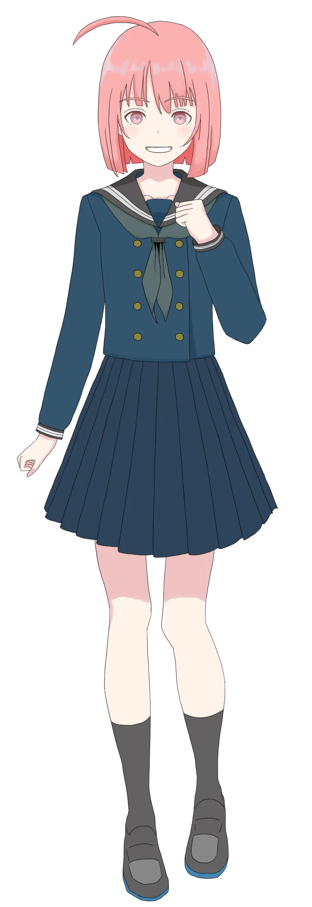

ホーム（いつも）
ホーム（例会の日）
稽古を選ぶ

次の例会まで
3
回
研修会 D2
目標
例会で4連勝してC1へ昇級
詳細
体力
62/100
▲ 好調
今日は
詰将棋
に仲間が2人いるよ。伸びが大きいみたい。
詰将棋
Lv3
主に「詰み」、少し「読み」
失敗率
4%
・体力
−20
🍵
休む
体力が戻る
♟
稽古
能力を伸ばす
✦
スキル
4つ
🎐
出かける
やる気
👥
研究会
読みと安定
戻る
選ぶと、伸びる数が上に出る
これにする
ログ
師匠の予定
 今日は詰将棋に仲間が2人いるよ。伸びが大きいみたい。今日は詰将棋に仲間が2人いるよ。伸びが大きいみたい。
今日は詰将棋に仲間が2人いるよ。伸びが大きいみたい。今日は詰将棋に仲間が2人いるよ。伸びが大きいみたい。